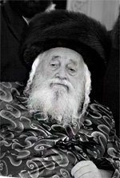

With Lubavitch
Rabbi Moshe Yehoshua Hager of Vizhnitz zt”l was a public supporter of the Rebbe and Chabad. * He fought publicly to have Rabbi Landau appointed rav of B’nei Brak and was one of the first Admurim who bought letters in a Torah scroll for his family members. He encouraged the initiative to learn a dail

He was born on 13 Sivan 5676/1916 and his father was the Admur Rabbi Chaim Meir zt”l of Vizhnitz, author of Imrei Chaim. In his youth, he displayed great talent in learning as well as exceptional diligence. Even as a bachur, he temporarily filled his father’s rabbinic position in the town of Vilkhovitz. In later years, he led the Vizhnitzer yeshiva in the famous city of Grosswardein in Hungary.
During the Holocaust he fled with his wife (Rebbetzin Leah Esther, daughter of the Admur Rabbi Chaim Menachem Mendel of Dej) and daughter to Romania. After much travail, he miraculously arrived in Haifa in 5704 but was immediately arrested by the British having arrived without a certificate. With the help of Vizhnitzer Chassidim in Eretz Yisroel he was released two days later.
Upon his arrival in Eretz Yisroel, his uncle, the Vizhnitzer Rebbe, author of Damesek Eliezer, appointed him as rosh yeshiva of the Vizhnitzer yeshiva in Tel Aviv. He led the talmidim and his clear, deep shiurim became known far and wide. Kiryat Vizhnitz in B’nei Brak was inaugurated in 5708 and he was appointed by his father as rav of the new Chassidic enclave.
Over the years, a relationship developed between his father and Lubavitcher Chassidim in which he tremendously admired the work they did. When the Rebbe announced the T’fillin Campaign, the Imrei Chaim was one of the first Admurim who signed in support of this effort. When someone made a comment about his signing on behalf of Chabad, his response was, “You are denigrating the honor of a Gadol B’Yisroel. Lubavitch has proven itself. They have established generations of baalei t’shuva.”
WITH LUBAVITCH
When the Imrei Chaim passed away in 5732/1972, Rabbi Moshe Yehoshua was appointed as his successor in Eretz Yisroel. Since then, for forty years, he led the Vizhnitzer Chassidim. Vizhnitz, as well as its mosdos in Eretz Yisroel and abroad, grew. His strong leadership led the leaders of Agudath Israel to appoint him as Nasi of the Moetzes G’dolei Ha’Torah.
The Admur zt”l was a great friend of Chabad and the Rebbe and supported the “spreading of the wellsprings.” He encouraged the takana to learn Rambam on a daily schedule and was among the first Admurim who bought letters in the “Torah Scroll for Jewish Children” for his grandchildren.
When some people opposed the Rebbe’s mivtzaim, he strongly censured “those who oppose any inyan of Torah and Judaism that is initiated by the [Lubavitcher] Rebbe shlita.” On a number of occasions he expressed his amazement over the enormous scope of the Rebbe’s holy work and the mesirus nefesh of his shluchim around the world.
After the passing of Rabbi Yaakov Landau, rav of B’nei Brak, there were those who did not want his will carried out in which he said that his oldest son, R’ Moshe, should succeed him. Chabad Chassidim, under the direction of the Rebbe, worked to unite forces in B’nei Brak around R’ Moshe. The Admur zt”l openly supported R’ Moshe and did a lot to promote his rabbanus and his superior kashrus supervision. When people wanted to ban Chabad at the end of 5748, the Admur zt”l opposed them even at the cost of splitting the Agudath Israel movement.
ENCOURAGING THE LEARNING OF RAMBAM
The Admur zt”l encouraged the Rebbe’s enactment of daily learning of Rambam. For the first Siyum HaRambam, which took place in 5745, he wrote a special letter for the occasion that took place in Eretz Yisroel:
“I join together with those who study our holy Torah in their joy upon the completion of the first cycle of the learning of Rambam, which was arranged by the Lubavitcher Rebbe shlita. I send my blessing to all those who learn it and those who participate in the joy of this mitzva.”
At the Siyum which took place in Yerushalayim in 5749, his son, R’ Menachem Mendel said, “I was asked by my father, the Vizhnitzer Rebbe, to bring and convey his holy blessing and wishes that the honor of heaven and honor of Chassidus increase. My father instructed me to convey, at this holy event with a multitude of people, his blessings and wishes to the venerable and holy Lubavitcher Rebbe, that Hashem should give him strength with good health and he should be successful in his holy work, as per his holy path in a manner of ‘spreading the wellsprings outward,’ to spread Judaism and Chassidus, and may he merit to increase the honor of heaven and the honor of Chassidus until the coming of Moshiach Tzidkeinu.”
After 27 Adar 5752, when tens of thousands of Jews prayed for the recovery of the Rebbe, the Admur told Chabad rabbanim, “Prayers need to be increased until Hashem has mercy on the Jewish people and sends the [Lubavitcher] Rebbe a complete and speedy recovery. The Rebbe’s net is spread over the entire world and there is no location where his power is not apparent and effective. We need him to have a speedy recovery so he can continue spreading Torah and Chassidus throughout the world.”
Whenever there was news about deterioration in the Rebbe’s health, he sent his gabbai to instruct the talmidim of the Yeshiva G’dola of Vizhnitz to stop learning and say T’hillim.
In the book Shemen Sasson MeiChaveirecha the author quotes wondrous things from Rabbi Mordechai Shlomo Steinmetz, Rosh Kollel of Vizhnitz in Har Nof:
“We heard many times from the Admur of Vizhnitz about his great admiration for the greatness of the Lubavitcher Rebbe in all parts of Torah, Nigleh and Nistar, and his greatness in holiness and astonishing asceticism; as far as his greatness in leadership, he greatly admired his tremendous work and constant concern to spread Judaism throughout the world, even in forsaken places.
“We heard from the [Vizhnitzer] Rebbe that on various occasions people came to him from afar and when he asked them whether basic Jewish needs were met in their area, such as a place for davening, a mikva, etc. they responded that the Lubavitcher Rebbe made sure to have a mikva and Jewish school built even in their distant location.
“One time, in the lifetime of his father, the Imrei Chaim, he traveled to communities of Vizhnitzer Chassidim in Europe on behalf of the mosdos. At the airport, when he boarded the plane, a religious Jew introduced himself and they greeted one another. When the Rebbe asked him where he was going, he said, ‘I don’t know.’ When the Admur expressed his surprise – how could he buy a ticket without knowing where he was going – he said that he was a Chabad Chassid and had been instructed by the Lubavitcher Rebbe to go to the airport in London where he would find out where he should go from there in order to carry out an urgent mission.
“This comes to teach us – concluded the Admur – how great the emunas chachomim (faith in the sages) of Chassidim ought to be so that they are ready, without questioning and without understanding, to always carry out instructions and orders of the Rebbe to the fullest.”
IN THE MERIT OF THE TZADDIK
The Admur took a great interest in the work Chabad is doing in the Ukraine and was amazed by the enormity of their work. On a number of occasions, he spoke admiringly to his Chassidim about the mesirus nefesh of the Rebbe’s shluchim in the former Soviet Union.
The Admur visited Berditchev in the Ukraine at the end of 5754. At that same time, the shluchim were trying to convince a young Jewish man to undergo circumcision, but his grandmother was afraid and did not give her consent. The shluchim suggested that the Admur, who would be visiting their city, be the sandak for her grandson, which would be a great z’chus for her and her family. She agreed and the Admur was honored with sandaka’us. At the bris he cried, so overcome was he by emotion.
TENS OF THOUSANDS AT HIS FUNERAL
In recent years, the Admur’s health was poor. He is survived by his second wife, two sons who perpetuate his leadership of Vizhnitz Chassidus – the older son is Rabbi Yisroel Hager of Vizhnitz and the other son is Rabbi Menachem Mendel Hager, Av Beis Din of Kiryat Vizhnitz – and his sons-in-law who are leaders of thousands: the Skverer Rebbe, the Satmar Rebbe-R’ Aharon, the Belzer Rebbe, and Rabbi Menachem Erenster, Rosh Yeshivas Vizhnitz.
BOX:
RABBI SHOLOM KUPCHIK IS MY REBBI IN TANYA
It was 5717 in B’nei Brak, in Yeshivas Vizhnitz. R’ Boruch Duchman, a senior Chabad Chassid who had just come out of Russia after much suffering, began regularly visiting Yeshivas Vizhnitz in B’nei Brak which was near his new home. R’ Boruch, who until then had been involved in teaching Chassidus to young men in Samarkand, began to influence the Vizhnitzer youngsters, talmidim of the yeshiva, in the ways of Chabad Chassidus. He did this with his trademark sincerity and pure faith.
R’ Boruch did not teach in a structured way using a text. He had casual discussions with the talmidim in which he told them about the time he spent in Yeshivas Tomchei T’mimim in Lubavitch under the Rebbe Rashab and Rebbe Rayatz. While schmoozing with them, he shed new light on the lives of mesirus nefesh of Lubavitcher Chassidim in the Soviet Union. He spiced his talks with quotes from the works of the Rebbeim.
Many talmidim in Yeshivas Vizhnitz found these talks enjoyable and they took an interest in Chabad Chassidus. Rabbi Moshe Yehoshua Hager was the rosh yeshiva at the time. He was the son of the Admur and later became the Admur himself. Although he realized that his students’ interest in Chabad Chassidim and the teachings of Chabad could draw them into Chabad, he encouraged them to continue talking to R’ Duchman. “He explained to us how important it is to become close to a Chassid like this who basked in the glow of tzaddikim of a previous generation,” recalls Rabbi Benzion Grossman. He was a talmid in the yeshiva at the time.
“Although he knew that we were becoming acquainted with Chabad Chassidus and where this could lead, he always encouraged us to stay around R’ Boruch and to hear Chassidus from him. When older talmidim from Yeshivas Slobodka tried to visit our yeshiva in order to give us a taste of their approach, he absolutely did not allow this. The Rebbe zt”l instructed us not to have anything to do with them.”
R’ Duchman received a letter from the Rebbe about this important work that he did, which contained detailed instructions. In a letter dated 28 Adar I 5719, the Rebbe writes, “I was pleased to receive your letter of 22 Adar I in which you write about your learning with the precious bachurim and family men, may they increase.” The Rebbe gave him instructions about the learning (Igros Kodesh, vol. 18, letter 6734).
***
R’ Shlomo Kupchik was a Lubavitcher Chassid who learned in Yeshivas Vizhnitz in his youth. While learning there, he had a regular study session in Tanya with Rabbi Moshe Yehoshua Hager. After the passing of R’ Shlomo, an older Vizhnitzer Chassid went to console the family. The family did not recognize him but realized he had been sent by the Vizhnitzer Rebbe. He mentioned that R’ Shlomo had once visited the beis midrash of the Vizhnitzer Rebbe and when he was pushed around the Admur said to his Chassidim, “Don’t push him! He is my rebbi in Tanya!”
Shneur Zalman Berger. "With Lubavitch." Beis Moshiach, no. 831 (April 22, 2012).